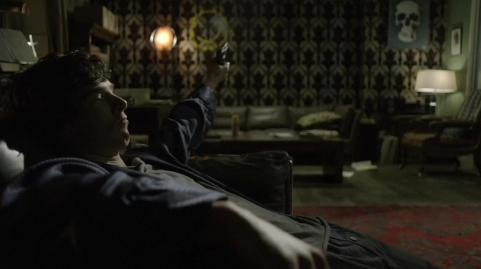

SHERLOCK S01 E03 THE GREAT GAME

John receives news of an explosion on Baker Street and rushes back home, only to find Sherlock safe and Mycroft pressing Sherlock to investigate the murder of an MI6 clerk and the disappearance of a flash drive with important defence plans. Sherlock refuses and is then called to Scotland Yard. Inside the bombed-out flat was a strongbox containing a mobile phone similar to the one belonging to the victim from "A Study in Pink"